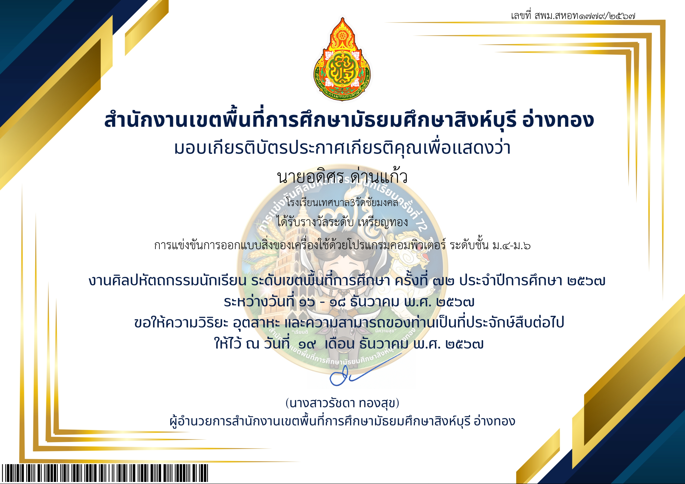
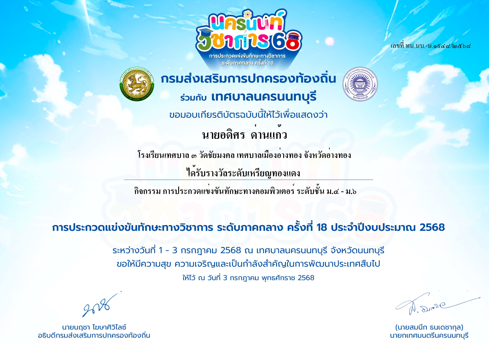
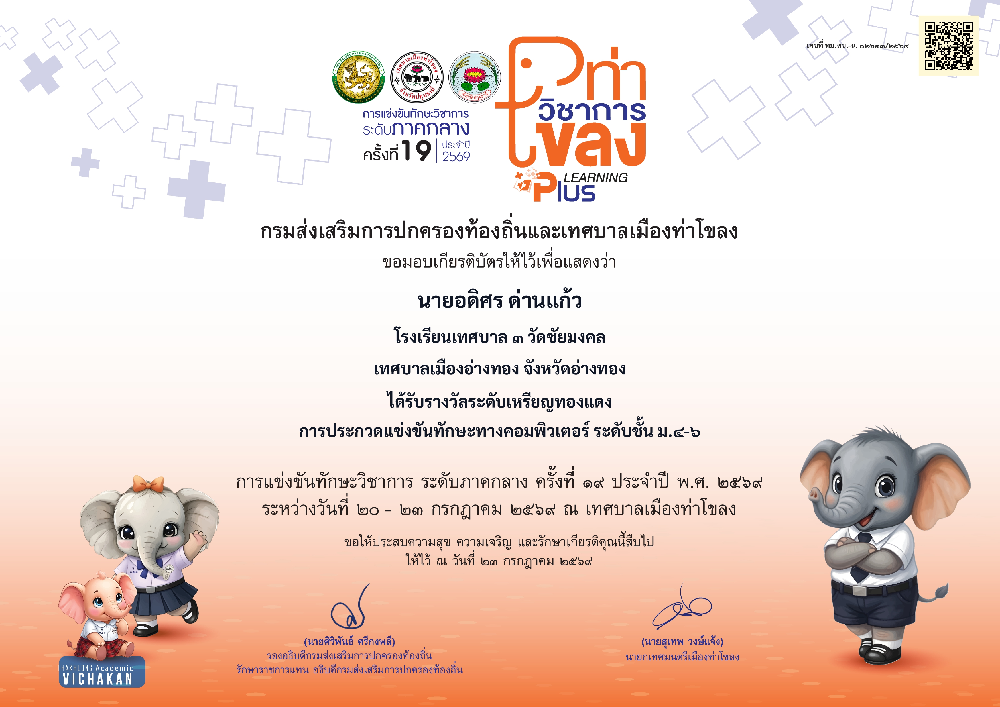

ผลงาน / ประกาศนียบัตร

การออกแบบสิ่งของเครื่องใช้ ระดับชั้น ม.4 - ม.6
รายละเอียดผลงาน

การแข่งขันทักษะคอมพิวเตอร์ ระดับชั้น ม.4 - ม.6
รายละเอียดผลงาน

การแข่งขันทักษะคอมพิวเตอร์ ระดับชั้น ม.4 - ม.6
รายละเอียดผลงาน

ตอบคำถามวันวิทยาศาสตร์แห่งชาติ
รายละเอียดผลงาน